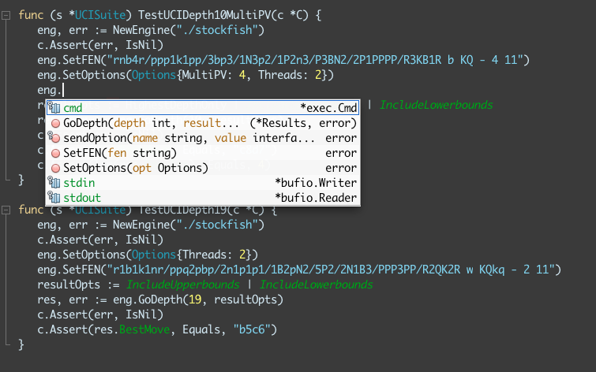
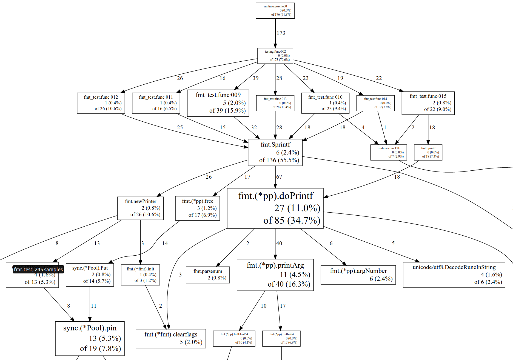

#golang #toolkit
La boite à outils (presque) idéale
Proposé par Benjamin Chenebault / @TheBenC_
> From the beginning of the project, Go was designed with tools in mind.
> Rob Pike, 2013
Proposé par Benjamin Chenebault / @TheBenC_
Development tools
The basics
- go clean
- go build
- go install
- go run
gofmt, Le formatteur
Proposé par Benjamin Chenebault / @TheBenC_
goimport, Le formatteur ++
Proposé par Benjamin Chenebault / @TheBenC_
govet, le linter
Proposé par Benjamin Chenebault / @TheBenC_
gocover, le moteur de couverture
Proposé par Benjamin Chenebault / @TheBenC_
count covermode

golint, le checkstyle pour go
Proposé par Benjamin Chenebault / @TheBenC_
goerrcheck, le checker d'erreurs
Proposé par Benjamin Chenebault / @TheBenC_
gocode, le démon d'autocomplétion
go oracle, le démon de navigation
Proposé par Benjamin Chenebault / @TheBenC_
Performance tools
Memory profiler
Proposé par Benjamin Chenebault / @TheBenC_
CPU profiler
Proposé par Benjamin Chenebault / @TheBenC_
Benchmark et optimisations locales
Proposé par Benjamin Chenebault / @TheBenC_